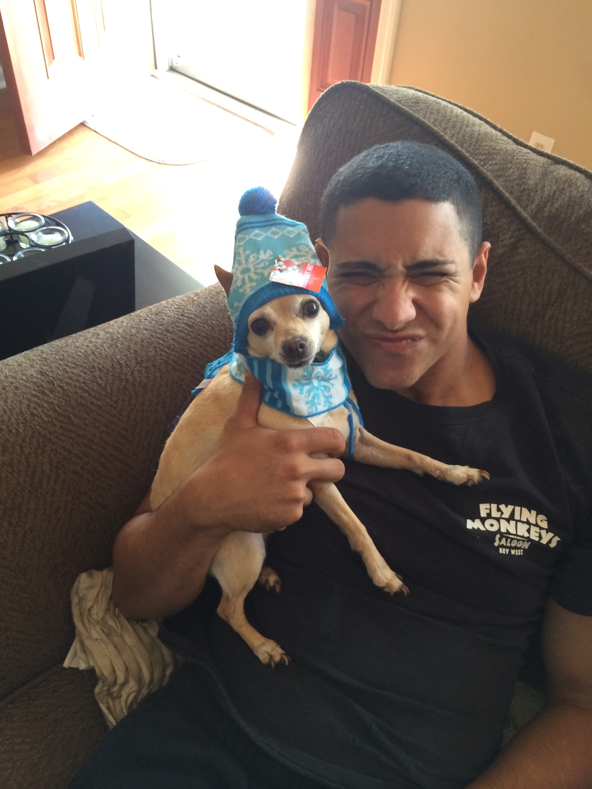

Discover the World of Pets
Welcome to Pet Insights! This website is dedicated to exploring the wonderful world of pets, offering insights and data for pet enthusiasts and anyone interested in pet care and ownership. From statistics on popular pet types to tools for managing pet data, our goal is to provide valuable, accessible information about the animals we love.
Explore The Pages
About Us
Learn about me, Julio Figueroa. This page shares my journey, expertise, and commitment to providing data-driven insights on pets. Here, you will also find details on the technologies and tools used to create this website, along with a link to the GitHub repository containing the project's source code.
Manage Pets
This interactive page allows you to create, update, and delete pet data in a simple and user-friendly format. Use it to mock data management, simulating a typical CRUD (Create, Read, Update, Delete) interface. It's a hands-on tool for organizing pet-related information, perfect for pet owners or enthusiasts who want a basic way to log and view pet details.
Data Analytics
Our Data Analytics page offers a visual representation of pet ownership trends using Chart.js. Here, you'll find graphs that showcase the popularity of different pet types and provide insights into pet ownership. This page makes data engaging and accessible, perfect for users curious about which pets are most popular and other related statistics.